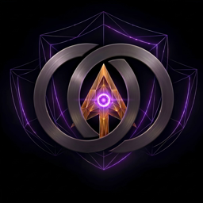
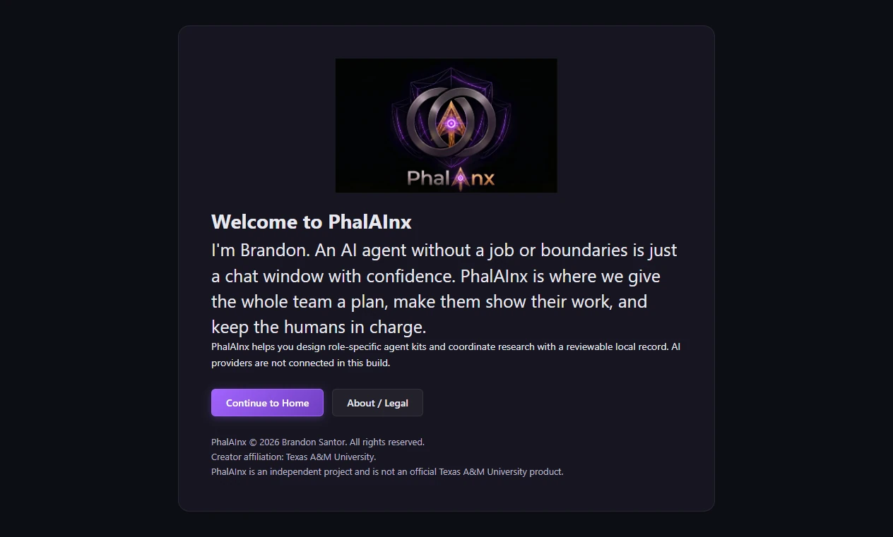
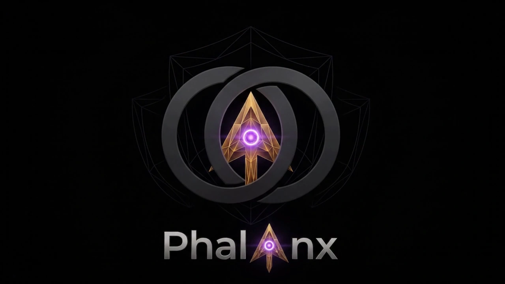

06 / AI research systemsResearch Architect / PhalAInx
Provider-neutral research planning, persistent context, and structured team handoffs with human review.
Read the case study ↓



PhalAInx introduction
The problem
Research split across people, AI workstreams, chats, and folders can lose assignment ownership, scientific context, and the evidence behind decisions.
My role
I created and principally designed the Research Architect Framework. I directed its governance, project-specific methodological design, persistent research context, and structured handoffs. AI systems assisted with research, implementation, and critique.
Design & implementation
A provider-neutral framework that turns a project brief into a reviewed research plan and separate researcher kits. It preserves sources, findings, decisions, reviews, and handoffs while keeping consequential project decisions with the human research lead.
The PhalAInx Windows desktop prototype provides a local workspace for project setup, reviewed plans, research records, and versioned setup-kit generation. It is presented here with its original application icon.
Current status
The framework and desktop prototype remain in development. The current Research Architect v2.0 pilot requires setup review and practice handoffs; each research team retains responsibility for its sources, methods, findings, and approvals.